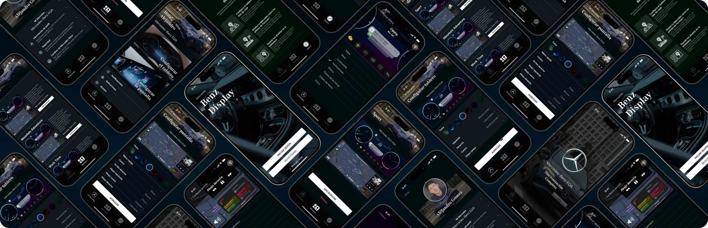
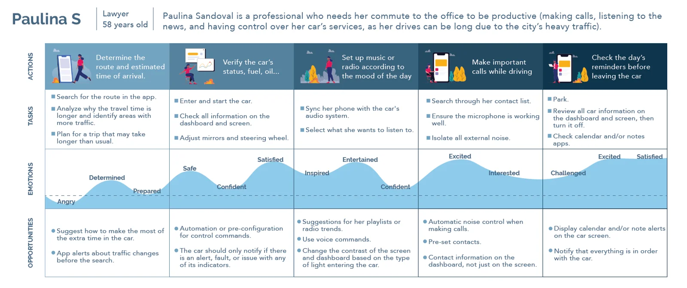
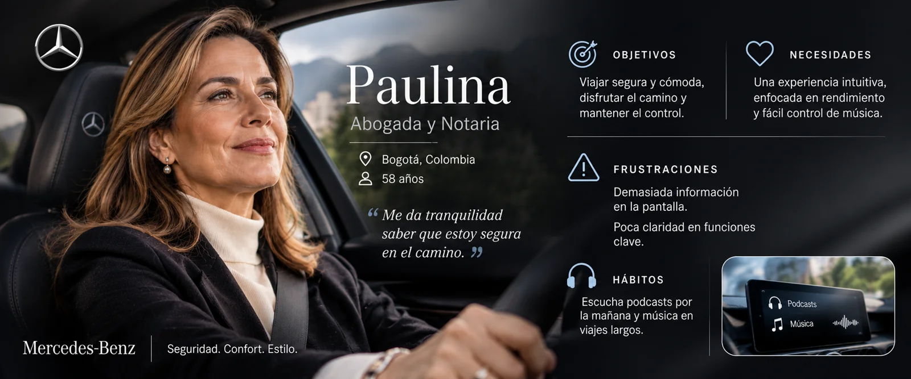
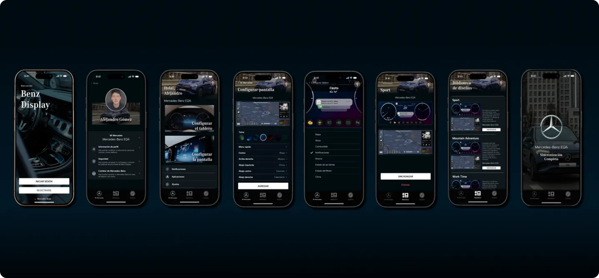
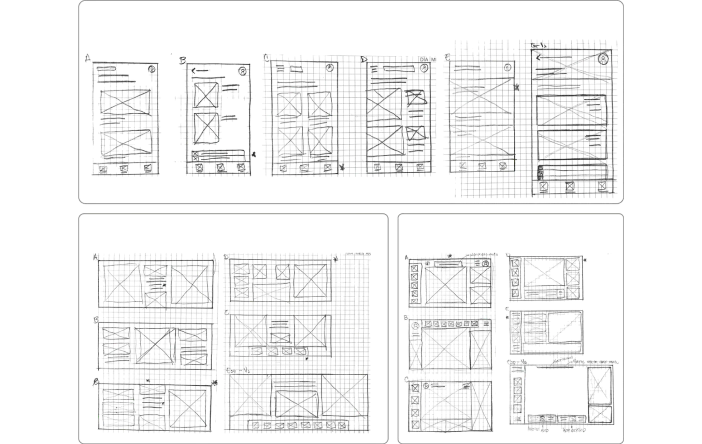
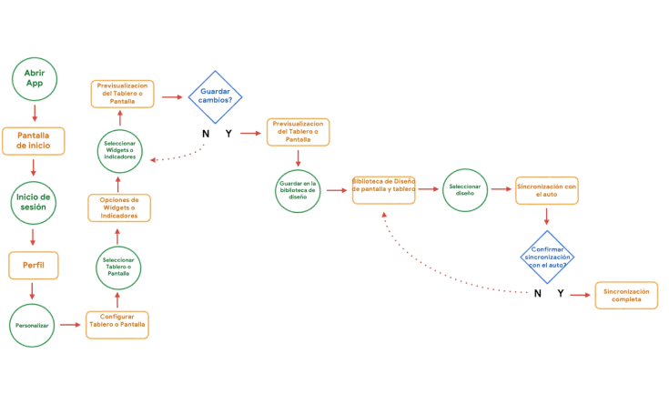
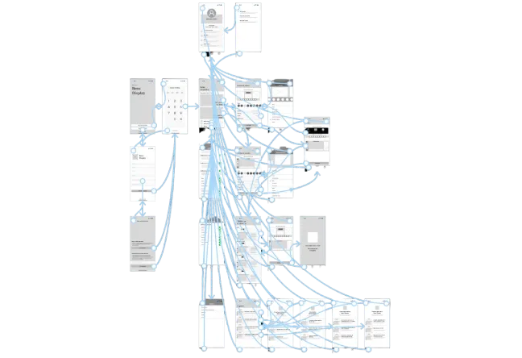
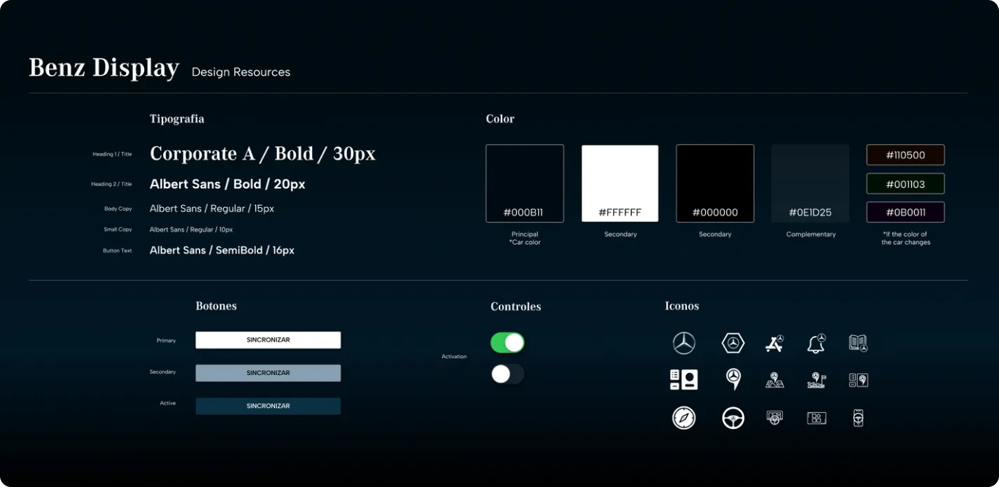
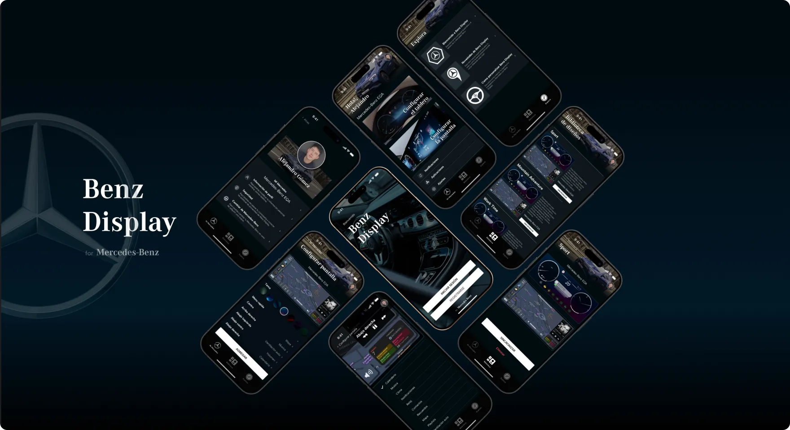

Proyectos / Caso 01 · App móvil · Proyecto conceptual
benz display
Diseñé una app para que cada conductor configure qué muestra su tablero y su pantalla según el viaje, con el auto detenido y sin distraerse al manejar.
Proyecto conceptual del Certificado Google UX. No está afiliado a Mercedes-Benz.
Mi rol
Proyecto individual: investigación, arquitectura de información, UI y pruebas
Alcance
App móvil que configura el tablero y la pantalla del vehículo
Duración
2 meses
Herramientas
Figma, Adobe Suite

En este caso
00
resumen
desafío
Cada conductor quiere ver información distinta y ningún viaje es igual. El tablero muestra lo mismo para todos, y si alguien más usa el auto, desconfigura lo que el dueño había ajustado.
enfoque
Entrevisté a 5 conductores, definí la arquitectura de tres superficies (app, tablero y pantalla) y validé con 5 participantes en dos rondas de usabilidad, de lo-fi a hi-fi.
resultado
Un prototipo hi-fi para diseñar, guardar y sincronizar configuraciones desde una biblioteca, con un perfil por conductor y edición solo con el auto detenido.
01
investigación
Contexto
Ningún viaje es igual, pero el tablero sí.
MBUX, el sistema de Mercedes-Benz, permite configurar la pantalla, pero el tablero trae estilos predeterminados y no hay una app para personalizarlo. Y no es lo mismo ir a la oficina a diario que salir de la ciudad con la familia.
En las entrevistas descubrí que el tiempo en el auto cambia el estado de ánimo del conductor. La oportunidad: que cada persona arme su tablero y su pantalla según el viaje, y los guarde para usarlos cuando los necesite.
El estudio en cifras
5
conductores por ronda de pruebas
2
rondas de usabilidad: lo-fi y hi-fi
5/5
configuraron su tablero sin dificultad
4
sistemas auditados: MBUX, Android Auto, CarPlay y BMW iDrive
Métodos
Preguntas de investigación
Pregunta principal
¿Pueden los conductores personalizar su tablero y su pantalla desde una app, sin ayuda y sin frustrarse?
P1
¿Completan las tareas clave?
Configurar el tablero, cambiar la vista de navegación, guardar y aplicar un diseño, ajustar brillo y colores, y restaurar.
P2
¿Es intuitivo personalizar?
Qué tan fácil resulta configurar tablero y pantalla y entender las opciones.
P3
¿Dónde se atoran?
Puntos de fricción y frustración en la navegación y el flujo de personalización.
P4
¿Qué más valorarían?
Funciones adicionales que los conductores consideren útiles para sus viajes.
Lo que encontré en las entrevistas
Insight 01
El trayecto cambia el ánimo
El primer recorrido del día condiciona cómo se siente el conductor el resto de la jornada.
Insight 02
En la rutina, eficiencia
En los trayectos diarios quieren gestionar su calendario, hacer llamadas y escuchar podcasts.
Insight 03
Fuera de la rutina, confort
En los viajes no rutinarios priorizan la tranquilidad y el tiempo con familia o amigos.
Auditoría competitiva · MBUX, Android Auto, CarPlay y BMW iDrive
Comparé cómo cuatro sistemas resuelven la pantalla y el tablero, evaluando primeras impresiones, interacción, diseño visual y contenido.
MBUX
Mercedes-Benz · competidor directo
✓ Lo que hace bien
Tablero y pantalla con la misma identidad, asistencia por voz, reconocimiento facial y textos legibles.
! Dónde se queda corto
El tablero solo trae 3 estilos predeterminados, no hay app y a veces la información es demasiada y muy técnica.
→ Lo que tomé
Mantener su identidad visual en tablero y pantalla, pero abrir el tablero a la personalización.
CarPlay
Apple · competidor directo
✓ Lo que hace bien
Desde el iPhone se ordenan las apps de la pantalla, y desde 2024 trae tableros diseñados para cada fabricante.
! Dónde se queda corto
El usuario no arma su tablero: los diseños los define el fabricante, y se ve como un iPhone grande.
→ Lo que tomé
Configurar desde el teléfono, antes de subir al auto.
Android Auto
Google · competidor directo
✓ Lo que hace bien
Se conecta con cualquier teléfono, permite dividir la pantalla y usa apps que el usuario ya conoce.
! Dónde se queda corto
No muestra el estado del auto ni modifica el tablero; se ve como un Android con íconos grandes.
→ Lo que tomé
Apps y gestos conocidos, para no obligar a aprender de nuevo.
BMW iDrive
BMW · competidor indirecto
✓ Lo que hace bien
Widgets en la pantalla y una app con servicios remotos, estadísticas y seguridad.
! Dónde se queda corto
La app no personaliza pantalla ni tablero, y varias funciones son de pago.
→ Lo que tomé
Los widgets como unidad de personalización.
| MBUX | Android Auto | CarPlay | BMW iDrive | |
|---|---|---|---|---|
| Personalizar la pantalla | Sí | Sí, con apps del teléfono | Sí, desde el iPhone | Sí, con widgets |
| Personalizar el tablero | No · 3 estilos fijos | No | Diseños del fabricante | No |
| App para configurar | No tiene | El teléfono | El iPhone | Sí, sin personalizar |
| Estado del auto | Sí | No | Sí | Sí |
| Identidad unificada tablero + pantalla | Sí | No | No | Sí |
La oportunidad
Ninguno deja que el conductor arme su propio tablero ni guarde configuraciones para distintos viajes. Ahí estaba el espacio para Benz Display.
Puntos de dolor
No pueden escoger qué información ver.
No pueden escoger cómo luce el auto por dentro.
Es difícil ver algunas funciones mientras manejan.
Si alguien más usa el auto, desconfigura todo.
Hay demasiada información en pantalla.


↻ Toca la ficha para ver la otra cara
Persona
Paulina Sandoval
Profesional que quiere que sus trayectos al trabajo sean productivos: llamadas, noticias y gestión de los servicios del auto, en medio del tráfico de la ciudad.
Objetivos de diseño
Objetivo principal
Diseñar una experiencia para personalizar el tablero y la pantalla del auto, con una biblioteca de diseños, para que cada conductor arme lo que necesita en cada viaje.
01
Elegir qué ver
Que cada conductor decida qué información aparece y cuánta, sin exceso técnico.
02
Configurar sin distraerse
Preparar el tablero desde la app antes del viaje y ver el resultado en tiempo real.
03
Una configuración por conductor
Perfiles y biblioteca para que compartir el auto no desconfigure nada.
02
estrategia y decisiones
Estrategia
Llevar la personalización al teléfono: el conductor arma su tablero y su pantalla antes de salir, los guarda en una biblioteca y los sincroniza con el auto cuando los necesita.
01
Configurar antes, no al manejar
La personalización vive en la app: como en el guion gráfico de Paulina, se prepara el viaje antes de arrancar.
02
Ver el cambio en tiempo real
La vista previa muestra cómo queda cada widget mientras se elige, para decidir con seguridad.
03
Retroalimentación visual
Indicadores de la sección activa y transiciones suaves para saber siempre dónde se está.
04
Accesible para todos
Íconos universales, texto alternativo y títulos descriptivos para lectores de pantalla y baja visión.
05
Un diseño para cada viaje
Rutina, viaje largo o con familia: cada contexto merece su propia configuración guardada.
Del dolor a la solución
Decisiones clave

Decisión 01
Configurar con el auto detenido
Por qué
Separé la edición de la conducción: el tablero y la pantalla se configuran desde el celular o con el vehículo detenido, y mientras se maneja solo se muestra lo esencial. Así la personalización no compite con la seguridad.
Decisión 02
La configuración, al centro
Por qué
Puse la acción principal en el centro de la app y llevé los servicios complementarios a un segundo nivel: accesibles, pero sin competir.
Decisión 03
Navegación fija arriba y abajo
Por qué
Fijé el título arriba y el menú abajo (inicio, biblioteca y consejos) para que el usuario siempre sepa dónde está.
Decisión 04
Una biblioteca y un perfil por conductor
Por qué
Las configuraciones se guardan y se sincronizan desde una biblioteca, y cada conductor tiene su perfil: si otra persona usa el auto, no desconfigura lo del dueño.
03
validación
Hice dos rondas de pruebas con 5 participantes cada una: la primera con el prototipo lo-fi y la segunda con el hi-fi.



Lo que observé · Mapa de afinidad
Usabilidad
“Se confundió al principio con los íconos.”
“Quería desactivar casi todas las notificaciones.”
Navegación
“Preguntaba mucho sobre qué más podía hacer la app.”
“Se le dificultó encontrar la opción de novedades.”
Funcionalidad
“Puedo hacer que el tablero se vea como yo quiero.”
“Ya no tengo que ver la pantalla mientras manejo, porque tengo la información en el tablero.”
Utilidad
“Esto es bastante fácil, puedo hacer varios diseños y dejarlos dependiendo de cómo quiero mi día.”
“Se sintió emocionado al ver las opciones de personalización.”
Conclusiones de las pruebas
5 de 5
configuraron el tablero sin dificultad.
→ La configuración es intuitiva.
5 de 5
guardaron y sincronizaron sus diseños sin dificultad.
→ Guardar y sincronizar es claro.
4 de 5
se confundieron al buscar “Novedades Benz Display”.
→ Hacía falta una navegación más clara.
4 de 5
querían alertas sobre el rendimiento del auto.
→ Informar el estado del vehículo.
3 de 5
pidieron más opciones para widgets y notificaciones.
→ Ampliar la personalización.
3 de 5
mencionaron un modo familiar.
→ Perfiles por conductor.
Qué cambió en cada ronda
Ronda 1 · Prototipo lo-fi
Hallazgo
Cambio en el diseño
Pedían manejar varios perfiles.
Diseñé perfiles por conductor y los probé en la ronda 2.
No encontraban “Novedades Benz Display”.
La moví a un lugar más visible.
No era claro cómo volver atrás.
Hice más evidente el regreso entre pantallas.
Ronda 2 · Prototipo hi-fi
Hallazgo
Cambio en el diseño
Querían sincronizar sin volver a la configuración.
Agregué la sincronización directa desde la biblioteca.
Las transiciones se sentían planas.
Hice transiciones que muestran de dónde viene y a dónde va cada elemento.
04
solución
01
Control fácil e intuitivo
Desde el primer uso, la app reconoce las características del auto.
02
Vista previa en tiempo real
Los cambios en los widgets se ven al instante.
03
Biblioteca personal de diseños
Guarda, edita y sincroniza configuraciones.
04
Perfiles para compartir el auto
Dos o más perfiles conectados al mismo vehículo.
05
Centro de control
Activa y ajusta apps y notificaciones desde una sola pantalla.
06
Inspiración para cada trayecto
Consejos y novedades para aprovechar el tiempo en el auto.

Design system
Guía de estilo
Alineé la interfaz con la identidad de Mercedes-Benz: tipografía corporativa (Corporate A y S), una paleta de negro, blanco y plateado con acentos en azul, íconos de línea minimalistas y componentes con bordes redondeados y alineación simétrica, para transmitir precisión y elegancia.

Accesibilidad
Transiciones que orientan
Ayudan a entender dónde queda cada widget al editar.
Iconos universales y texto alternativo
Títulos descriptivos y soporte para lectores de pantalla.
Previsualización en tiempo real
Retroalimentación inmediata para decidir con precisión.
05
resultados
Qué cambió
✓ Los participantes crearon varios diseños para usarlos según su día.
✓ Sincronizar desde la biblioteca eliminó el paso de volver a la configuración.
✓ Cada conductor conserva su configuración aunque comparta el auto.
Voz de los usuarios
“Esto es bastante fácil, puedo hacer varios diseños y dejarlos dependiendo de cómo quiero mi día.”
“Aquí solo dejo lo necesario; del resto se encarga el mecánico o mi novio.”
Cómo lo mediría
→ Tiempo en completar la personalización
→ Tasa de error por tarea
→ Tasa de abandono por frustración
→ Escala de usabilidad (SUS)
→ Satisfacción en encuesta post-uso
→ Diseños guardados por conductor
Qué aprendí
En el auto el contexto lo es todo: el mismo conductor necesita cosas distintas según el viaje, y el diseño tiene que adaptarse sin pedirle atención mientras maneja. Cada ronda de pruebas me mostró qué simplificar antes de agregar.
Próximos pasos
Probar en un vehículo real
Evaluar la versión desarrollada dentro del auto para medir su impacto en la conducción.
Profundizar en la pantalla
Investigar patrones de uso y preferencias específicas de la pantalla para mejorar la seguridad.